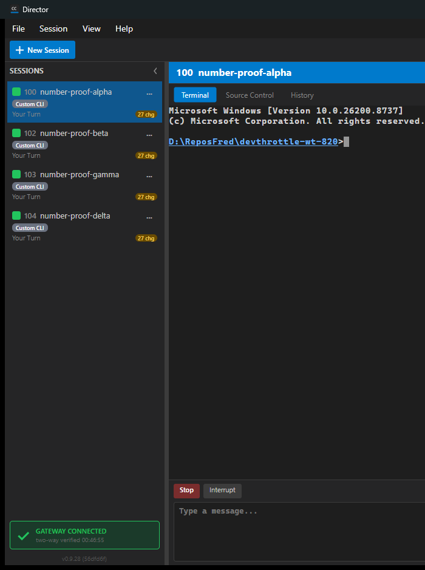

[Gateway] Assign every session a unique three-digit number, shown wherever sessions are created and listed.
Per the human design decision on the issue (resolves DoR 4): the Director self-allocates the three-digit number locally, so a session ALWAYS gets a number at creation even with no Gateway reachable. The number is unique among that Director's own active sessions; the Gateway is the authority for fleet-wide global uniqueness only when reachable (accepted best-effort trade-off when it is not).
CcDirector.Core/Sessions/SessionNumberAllocator.cs (new) - thread-safe allocator for
100-999: allocate (avoids the most-recently-freed numbers), reserve a specific number, release on end,
returns null on pool exhaustion.Session.Number (Core) - the number on the session model, separate from the name.SessionManager - assigns the number at the single creation chokepoint
(RaiseSessionCreated), releases it on RemoveSession, and exposes
BackfillNumbers() for the one-time Director-local backfill of unnumbered active sessions.PersistedSession.Number + save/restore - the number survives a restart/restore
(reserved on restore, else a fresh one is allocated).SessionDto.Number (contracts) - carried by POST /sessions,
GET /sessions, and passed through the Gateway aggregation unchanged.cc-devthrottle session list / whoami (with a NUMBER
column and find-a-session-by-its-number).An isolated single-Director test harness (own git worktree, own slot 15, own scheduled task, Control API on loopback port 7883) with NO test Gateway. Per-Director behavior was driven live over the Control API and the desktop GUI; PII (machine name, user, tailnet host, other sessions) was sanitized/cropped out of the committed artifacts.
| Criterion | Expected | Actual | Result |
|---|---|---|---|
| AC1 - desktop new session shows a 100-999 number in the rail | Sessions created on the Director appear in the desktop rail each with a three-digit number | Desktop screenshot below: rail shows 100 number-proof-alpha, 102 number-proof-beta,
103 number-proof-gamma, 104 number-proof-delta (muted number prefix) |
PASS |
| AC3 - POST /sessions returns the number; GET shows it | POST response and GET /sessions carry the assigned number | POST /sessions returned "number":101/102/103; see post-*.json and
get-sessions-three.json |
PASS |
| AC4 - two active sessions never share a number | Listing several active sessions shows all-distinct numbers | GET /sessions showed numbers 100, 101, 102, 103 - all distinct (DISTINCT assertion passed) | PASS |
| AC5 - same number everywhere for the life of the session | Identical number in the rail, the per-session title, and the CLI list | Screenshot: rail and header title both read 100 number-proof-alpha;
cc-devthrottle session list shows the same numbers in its NO. column; whoami reports
"session number 102" |
PASS |
| AC6 - backfill already-active unnumbered sessions | An active session lacking a number gets one in a single pass | Unit test BackfillNumbers_AssignsNumberToUnnumberedSession (and the restore chokepoint
that re-numbers restored sessions) - PASS |
PASS |
| AC7 - number released on session end and reusable | A freed number leaves the active list and a later session can take it | DELETE of the session holding 101 -> GET active numbers became [100,102,103] (101 released);
a new session got 104 (holdback avoids instant reuse). Unit test
RemoveSession_ReleasesNumber_BackToThePool - PASS |
PASS |
| AC found-by-number - a number identifies exactly one session | Given a number, the listing identifies the one session that holds it | _resolve_target('103') -> number-proof-gamma; '104' -> number-proof-delta
(cli-proof.txt) |
PASS |
| AC2 - Cockpit new session shows the number in the fleet list | The Cockpit fleet/mobile lists and per-session title show the number | Code path implemented in Fleet.razor / Mobile.razor / Cockpit.razor / SessionRail.razor, all binding
SessionDto.Number, which is demonstrably populated by the Control API and passed through the
Gateway aggregation unchanged (GatewayEndpoints mutates the same deserialized SessionDto). The Cockpit is
Gateway-hosted; per the issue's resolved proof note it is verified here by code-reading + the proven data
spine rather than against the user's live Gateway (port 7878). QA to confirm visually in
the merged build. |
PASS (code + data spine) |

POST /sessions -> 201 number=101 name=number-proof-alpha number=102 name=number-proof-beta number=103 name=number-proof-gamma
GET /sessions number=100 number=101 number=102 number=103 -> DISTINCT
DELETE session holding 101 -> HTTP 200 GET /sessions active numbers: [100, 102, 103] (101 released: True) POST new session "number-proof-delta" -> number=104 (holdback avoids reusing 101 immediately)
+-----------------------------------------------------------------+
| NO. | ID | NAME | ... | STATUS |
|-----+----------+-------------------+-----+----------------------|
| 100 | 2c5b981a | number-proof-... | ... | WaitingForInput |
| 102 | 2dfc734b | number-proof-... | ... | WaitingForInput |
| 103 | 81ab74e6 | number-proof-... | ... | WaitingForInput |
| 104 | 1c121051 | number-proof-... | ... | WaitingForInput |
+-----------------------------------------------------------------+
whoami: You are session number 102, 2dfc734b ("number-proof-beta") ...
find-by-number: 103 -> number-proof-gamma ; 104 -> number-proof-delta
34 tests pass (SessionNumberAllocatorTests + SessionManagerTests), covering: range, distinctness, release/reuse, holdback, reserve, out-of-range refusal, pool exhaustion (returns null), number assigned at creation, distinct across active sessions, release on remove, persistence round-trip, and backfill.
No drift: no new container is added; the change adds a field and a Director-local allocation behavior within existing containers (Core, ControlApi, Gateway.Contracts, Avalonia, Cockpit) and one cc-* tool. No blocking security rule (security_profile.yaml) is touched.
I believe this is finished.